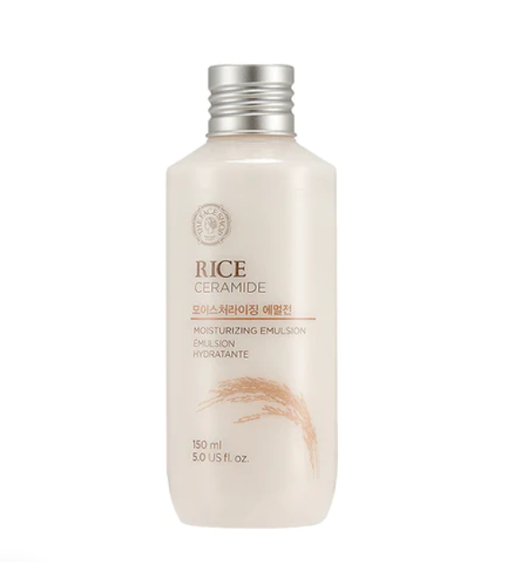

Essence
COSRX Advanced Snail 96 Mucin Power Essence comprises of 96% skin friendly snail secretion filtrate that is effective at repairing damaged skin, improving skin elasticity and maintaining hydration level all day long. It only contains essential ingredients, that nourish, repair and revitalise the skin. Snail mucin has the ability to repair everything.